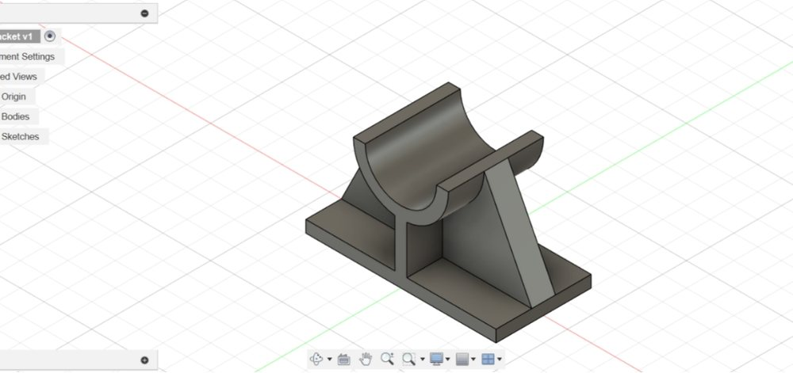

CAD modelling
I model in Autodesk Fusion 360, sketching, constraining, extruding, joining and rendering objects in 3D, and I look at each model from every angle before anything is made. In November 2025 I completed the Advanced CAD Designing course, and I wrote about what it taught me in Learning by designing. Stronger CAD lets me guide students in building accurate digital models, testing prototype iterations and working the way professional designers do.
Tools: Autodesk Fusion 360